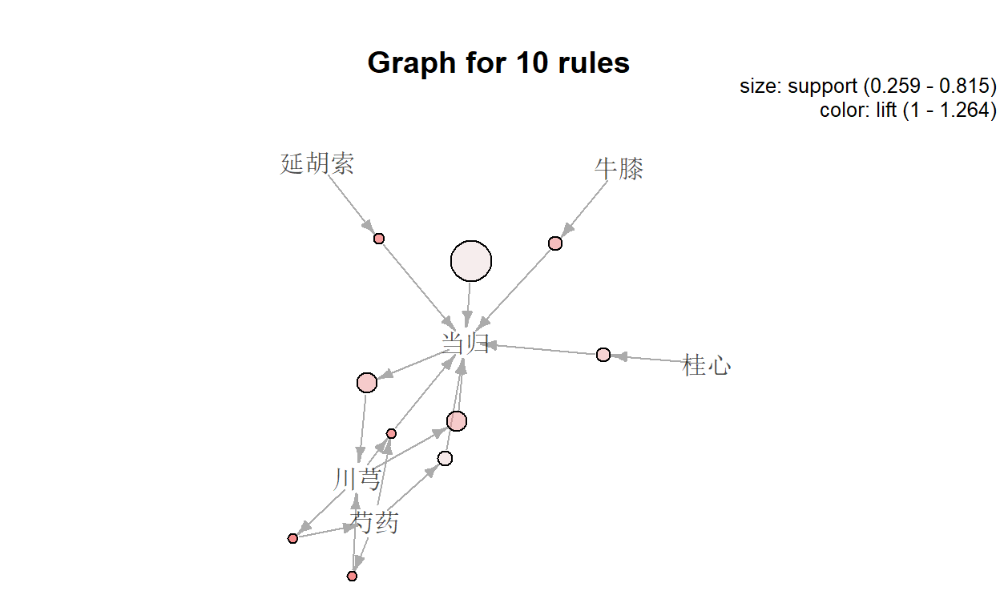

关联规则理论
什么是关联分析
啤酒与尿布
在美国有婴儿的家庭中，通常是母亲在家中照看婴儿，父亲去超市为婴儿购买尿布。当丈夫在为孩子购买尿布的同时，也通常购买自己爱喝的啤酒。因此，沃尔玛超市发现这一规律后，将啤酒与尿布放在相同的区域，使得父亲可以同时买到这两件商品，从而提高啤酒与尿布的销售量。
关联分析又被称为购物篮分析（market basket analysis）
关联性不代表因果关系，e.g.尿布\(\rightarrow\)啤酒
关联分析及关联规则定义

实际上，超市这种销售的行为不是偶然的，而是长期从顾客的大量订单中分析,从而得出的结论。关联分析，就是从大规模数据中，发现对象之间隐含关系与规律的过程，也称为关联规则分析。例如，{啤酒\(\rightarrow\)尿布}就是一个关联规则。
Association rules analysis is a technique to uncover how items are associated to each other.
应用场景
- 超市购物分析
- 图书购买分析
- 服装搭配分析
- 交通事故分析
- 医学数据分析
- 社交关系分析
In medicine
Relationships between symptoms and illnesses; diagnosis and patient characteristics and treatments (to be used in medical DSS); and genes and their functions (to be used in genomics projects)…
一些概念
### 事物库（数据集）dataset
| TID | Items |
|---|---|
| 1 | Bread, Milk |
| 2 | Bread, Diaper, Beer, Eggs |
| 3 | Milk, Diaper, Beer, Coke |
| 4 | Bread, Milk, Diaper, Beer |
| 5 | Bread, Milk, Diaper, Coke |
如同上表所示的二维数据集就是一个购物篮事务库。该事物库记录的是顾客购买商品的行为。这里的TID表示一次购买行为的编号，items表示顾客购买了哪些商品。
事务库中的每一条记录被称为一笔事务。在上表的购物篮事务中，每一笔事务都表示一次购物行为。
项集-Itemset
苹果，香蕉等每一个水果对象，都是一个项。
而一个或更多水果(项)构成的集合,就是项集。例如，{葡萄}, {香蕉，梨}都是项集。
Itemset
- A collection of one or more items
- Example: {Milk, Bread, Diaper}
- k-itemset
- An itemset that contains k items
支持度计数-Support count (\(\sigma\))
项集在事务中出现的次数。例如，｛Bread，Milk｝这个项集在事务库中一共出现了3次，那么它的支持度计数就是3。
支持度-Support(s)
包含项集的事务在所有事务中所占的比例：，这里N是所有事务的数量。上面的例子中我们得到了{Bread，Milk}这个项集的支持度计数是3，事物库中一共有5条事务，那么{Bread，Milk}这个项集的支持度就是3/5 (60%)。
Fraction of transactions that contain an itemset
E.g. s({Milk, Bread, Diaper}) = 2/5
X \(\rightarrow\) Y : s = \(\frac{\sigma (X)}{N}\) = \(\frac{count(X)}{N}\)
频繁项集 - Frequent Itemset
如果我们对项目集的支持度设定一个最小阈值，那么所有支持度大于这个阈值的项集就是频繁项集。
- An itemset whose support is greater than or equal to a min(s) threshold
The set of frequent k-itemsets is commonly denoted by \(L_K\).
置信度-Confidence(c)
关联规则的置信度定义为：这个定义确定的是Y在包含X的事务中出现的频繁程度。还是看｛Bread，Milk｝→{Diaper}这个例子，包含｛Bread，Milk｝项的事务出现了2次，包含｛Bread，Milk，Diaper}的事务也出现了2次，那么这个规则的置信度就是1。
X \(\rightarrow\) Y : c = P(Y|X) = \(\frac{s(X,Y)}{s(X)}\) = \(\frac{count(X,Y)}{count(X)}\)
例子
Example of Rules:
- {Milk,Diaper}\(\rightarrow\){Beer} (s=0.4, c=0.67)
- {Milk,Beer} \(\rightarrow\) {Diaper} (s=0.4, c=1.0)
- {Diaper,Beer}\(\rightarrow\){Milk} (s=0.4, c=0.67)
- {Beer}\(\rightarrow\){Milk,Diaper} (s=0.4, c=0.67)
- {Diaper} \(\rightarrow\) {Milk,Beer} (s=0.4, c=0.5)
- {Milk}\(\rightarrow\){Diaper,Beer} (s=0.4, c=0.5)
Summary
Are all association rules interesting and useful?
A Generic Rule: X \(\rightarrow\) Y [S%, C%]
- X, Y: products and/or services
- X: Left-hand-side (LHS)
- Y: Right-hand-side (RHS)
- S: Support: how often X and Y go together
- C: Confidence: how often Y go together with the X
这两个度的意义在哪里？
对于关联规则定义这两个度量很有意义的。首先，通过对规则支持度（s）的限定滤去没有意义的规则。我们从商家的角度出发，数据挖掘意义是通过挖掘做出相应的战略决策产生价值。如果一个规则支持度很低，说明顾客同时购买这些商品的次数很少，商家针对这个规则做决策几乎没有意义。其次，置信度（c）越大说明这个规则越可靠。
Association rules are considered interesting if they satisfy both
- a minimum support threshold and
- a minimum confidence threshold.
Lift 提升度
\(Lift = \frac{Confidence}{Expected\ Confidence} = \frac{P\left(X \cap Y\right)}{P\left(X\right).P\left(Y\right)} = \frac{c\left(X \rightarrow Y\right)}{s\left(Y\right)} = \frac{P(Y|X)}{P(Y)}\)
如果该值等于 1 ,说明两个条件没有任何关联。如果小于 1 ,说明 X 与 Y是负相关的关系，意味着一个出现可能导致另外一个不出现。大于 1 才表示具有正相关的关系。一般在数据挖掘中当提升度大于3 时,我们才承认挖掘出的关联规则是有价值的。
他可以用来评估一个出现提升另外一个出现的程度。
提升度是一种比较简单的判断手法，实际中受零事务（也即不包含 X 也不包含 Y 的事务）的影响比较大。所以如果数据中含有的零事务数量较大，该度量则不合适使用。
Apriori Algorithm
Association rule mining: Two-step process
- Find all frequent itemsets
- By definition, each of these itemsets will occur at least as frequently as a predetermined minimum support count, min_sup.
- Generate strong association rules from the frequent itemsets
- By definition, these rules must satisfy minimum support and minimum confidence.
Step 1 第一步的困局
A frequent itemset is an itemset whose support is ≥ minsup.
一个看似简单的问题，实质要耗费巨大的计算量。
Frequent itemset generation is still computationally expensive
Given d items, there are \(2^d\) possible candidate itemsets
如果有d件商品，那么有\(2^d - 1\)种排列组合。
对象之间任意组合构成的项集,数可能非常大。例如，在图中, 4个不同的对象(项)，就可以构成15种组合。而耐于含有N个对象 的数据集，若item种类稍大最终筛选的itemset就是天文数字，指数增长。所以我们迫切需要一种算法，能减少计算量。
我们今天的主角———Apriori算法
原则
- All subsets of a frequent itemset must be frequent(Apriori propertry).
- If an itemset is infrequent, all its supersets will be infrequent.
- 频繁项集的所有子集都必是频繁的（Apriori属性）。
- 如果一个项集是不频繁的，那么它的所有超集都是不频繁的。

Apriori算法会从k = 1开始,使用两个k项集进行组合,从而产生k + 1项集。结给之前介绍的算法原理，我们可知，频繁k + 1项集是由两个k项集组合而成，而耐于频繁k + 1项集来说，所有的k项集子集必然都是频繁项集，这就意味着,频繁k +1项集只可能从两个频繁项集组合产生,因此，当我们在组合的过程中，一旦发现某个k项集不是频繁项集(支持度小于指定的阈值)，就可以将其移除，无需再参与后续生成k + 1项集的组合。这样一来,就可以大大减少计算量。
流程
Apriori算法流程如下:
扫描数据集，从数据集中生成候选k项集\(C_K\)(k从1开始)
计算\(C_K\)中,每个项集的支接，删除低于阈值的项集，构成频繁项集\(L_K\)。
将频繁项集\(L_K\)中的元素进行组合,生成候选k + 1项集\(C_{K+1}\)
重复步骤2,3,倒满足以下两个条件之-时,算法结束。
频繁k项集无法组合生成候选k + 1项集。
所有候选k项集支度都低于指定的阈值(最忮持渡)，无法生成频繁k项集。

Step 2 生成关联规则
当产生频繁项集后，成关联规则会相对简单。我们只需要将每个频繁项集拆分成两个非空子集，然后使用这两个子集，就可以构成关联规则。当然，-个频繁项集拆分两个非空子集可能有很多种方式，我们要考海种不同的可能。例如,频繁项集{1, 2, 3}可以拆分为:
{1 -> 2,3}
{2-> 1,3}
{3-> 1, 2}
{1,2-> 3}
{1,3-> 2}
{2,3-> 1}
然后,我们针对每一个关联规则， 分别计算其置信度,仅保留符合最小置信度的关联规则。
参考文献
https://www.youtube.com/watch?v=0CB0Upqeh-o
https://www.bilibili.com/video/BV1Kt4y1X7dZ
https://rpubs.com/Argaadya/network-analysis-for-association-rules
https://medium.com/@yolandawiyono98/market-basket-analysis-with-r-8001417a8e29
Code
read data and library the packages
寻找频繁项集（Find all frequent itemsets）
summary(rules)
set of 109 rules
rule length distribution (lhs + rhs):sizes
1 2 3
1 49 59
Min. 1st Qu. Median Mean 3rd Qu. Max.
1.000 2.000 3.000 2.532 3.000 3.000
summary of quality measures:
support confidence coverage lift
Min. :0.1111 Min. :0.5000 Min. :0.1111 Min. :0.8182
1st Qu.:0.1111 1st Qu.:0.6667 1st Qu.:0.1296 1st Qu.:1.2273
Median :0.1296 Median :0.8571 Median :0.1481 Median :1.2462
Mean :0.1578 Mean :0.8070 Mean :0.2078 Mean :1.7403
3rd Qu.:0.1481 3rd Qu.:1.0000 3rd Qu.:0.2037 3rd Qu.:1.7802
Max. :0.8148 Max. :1.0000 Max. :1.0000 Max. :5.9062
count
Min. :12.00
1st Qu.:12.00
Median :14.00
Mean :17.05
3rd Qu.:16.00
Max. :88.00
mining info:
data ntransactions support confidence
herbs 108 0.1 0.5按要求排序
### 按置支持度
按置信度
可视化
散点图

关系图
